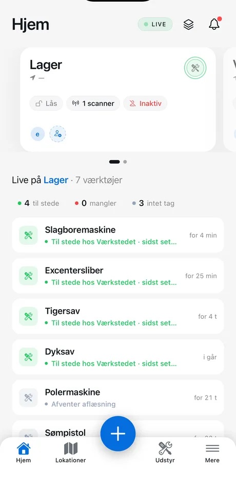

Spørg en håndværksmester, hvad firmaet ejer af værktøj, og der findes som regel en liste et sted. Spørg, hvor meget af det der faktisk bliver brugt, og svaret er et skøn. Der står en borehammer i hver varebil, men bliver de alle sammen brugt? Og når en svend mangler en multicutter, bliver der så købt en ny, selv om der ligger to i containeren, som ingen har rørt siden sommer?
Det er det spørgsmål, værktøjsstyring med RFID kan besvare. Ikke ud fra et regneark, der blev opdateret sidste måned, men ud fra hvornår værktøjet faktisk forlader bilen og kommer tilbage.
Hvad RFID kan, og hvad det ikke kan
Et passivt UHF RFID-tag har intet batteri. Det sidder på værktøjet resten af dets levetid, og en fast læser i varebilen, containeren eller på lageret ser hele tiden, hvilke tags der er inden for rækkevidde. Ingen skal huske at scanne noget.
RFID følger ikke en boremaskine gennem byen. Læseren ser kun værktøjet, når det er tæt på. Til gengæld reagerer den, når der sker noget: Læseren har en bevægelsessensor, så når døren til bilen eller containeren bliver åbnet, vågner den og læser alle tags på få sekunder. Er lokationen låst, og mangler der værktøj bagefter, får I besked med det samme. Og hver gang værktøjet tages ud og sættes tilbage, bliver det registreret. Det er netop de data, der fortæller, hvordan værktøjet bliver brugt.
Hvad tæller som en anvendelse?
I Trackrs er en anvendelse, at et stykke værktøj forlader sin lokation og kommer tilbage igen. For hver anvendelse ved systemet, hvornår værktøjet blev taget ud, og hvor længe det var væk. Lagt sammen giver det et billede af hver lokation:
- Mest brugte værktøjer, opgjort efter antal anvendelser.
- Aktivitet over tid: hvor mange forskellige værktøjer der bliver brugt dag for dag.
- Anvendelser over døgnet: hvornår på dagen værktøjet tages fra bilen eller containeren.
- Værktøj, der ikke bevæger sig: det, der står på hylden uge efter uge, falder lige så tydeligt i øjnene som det, der bruges hver dag.

Spørgsmålene, data kan svare på
Kan vi købe mindre værktøj?
Det er ofte det største spørgsmål. Et tænkt eksempel: Et firma har otte varebiler med hver sin borehammer til 6.000 kr. Data viser, at tre af dem bliver brugt hver uge, mens resten næsten aldrig forlader bilen. Så er næste indkøb ikke endnu en borehammer, men en beslutning om, hvor de eksisterende skal stå. Bliver to borehammere i stedet delt fra containeren, er der 12.000 kr., der ikke skal bruges næste gang, og det gælder for hver værktøjstype, I ejer flere af.
Står værktøjet det rigtige sted?
Når I kan se brugen pr. lokation, kan I se, at et stykke værktøj bliver brugt flittigt fra én bil og aldrig fra en anden. Så kan det flyttes derhen, hvor det gør nytte, i stedet for at det samme bliver købt to gange.
Hvornår skal det ud og hjem?
Anvendelser over døgnet viser, hvornår værktøjet tages i brug. Det hjælper med at planlægge, hvornår containeren skal være åben, og hvornår det er værd at have reserveværktøj klar.
Hvem har det, og passer det?
Udlån til en medarbejder registreres, og eftersyn planlægges på det enkelte stykke værktøj. Med modulet Udlejning og afregning kan værktøj, der står på en sag, afregnes via e-conomic. Og mangler der noget, ved I, hvor det sidst blev set.
Hvorfor RFID og ikke GPS eller QR?
For at måle brug skal hvert stykke værktøj registreres hver gang, det tages ud, uden at nogen gør noget. Det udelukker de andre teknologier som hovedløsning:
| QR | Bluetooth | GPS | RFID | |
|---|---|---|---|---|
| Batteri på værktøjet | Nej | Ja | Ja, skal lades | Nej |
| Registrerer af sig selv, når værktøjet tages ud | Nej, kræver scanning | Kun nær en modtager | Nej, viser position | Ja, ved læseren |
| Pris pr. værktøj | Meget lav | Mellem | Høj + abonnement | Lav |
| Bedst til | Udlån og udstyr uden tag | Færre, dyrere ting | Maskiner og trailere | Brug af hele værktøjsparken |
QR-koder er stadig nyttige til udstyr, der ikke kan bære et RFID-tag, og Trackrs understøtter begge dele. GPS giver mening på de få store maskiner, hvor positionen er det vigtige. Men skal I vide, hvor meget værktøjet bliver brugt, er det RFID, der giver svaret.
Kom i gang
Trackrs er bygget af os, hele vejen fra RFID-læseren og firmwaren til appen. Du kan læse mere på projektsiden eller se produktet på trackrs.dk.
Vil du vide, hvor meget jeres værktøj bliver brugt? Ring på +45 60 72 71 08 eller skriv til os, så tager vi en uforpligtende snak.